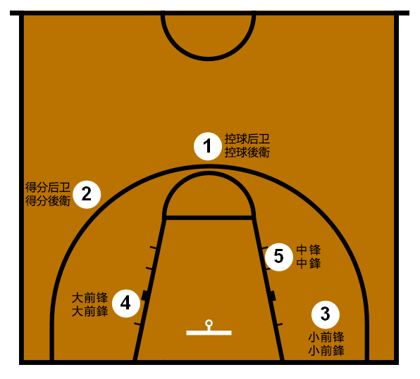

林書豪（Jeremy Lin），1988年8月23日出生於美國加利福尼亞州，父母皆為台灣移民。林書豪從小展現出色的籃球天賦，並最終成為首位在 NBA 中擁有顯著成就的美籍華裔球員。他的"林來瘋"（Linsanity）時期更是令世界矚目，當時效力於紐約尼克隊，他帶領球隊在幾場比賽中獲得連勝，震驚了籃球界。
除了在 NBA 取得成就，林書豪還曾效力於多支其他聯盟的球隊，包括中國 CBA 聯賽以及台灣 P. LEAGUE+（PLG）和台灣職業籃球大聯盟(TPBL)。他不僅是一位優秀的球員，還是一位有影響力的社會活動家，積極推廣亞裔文化並支持各種慈善事業。
林書豪於2023年9月14日加盟當時P. LEAGUE+（PLG）所屬的的職業籃球隊 新北國王（New Taipei Kings），並幫助球隊獲得2023-2024賽季的PLG年度總冠軍和東亞超級籃球聯賽(EASL)第四名的好成績，在這支球隊中，林書豪扮演著核心角色，不僅提供穩定的得分和助攻輸出，還通過他的經驗和領導力帶領球隊提升競爭力。
新北國王隊於 2021 年成立，雖然剛創建不久，但其實力在所有台灣職業籃球隊中仍有一定的競爭力。在林書豪加入前陣中已經擁有許多好手，像是兩屆賽季MVP的得主楊敬敏、獲選年度第一隊的林書緯(該球員是林書豪的弟弟)、最佳洋將穆倫斯、規劃球員戴維斯、國家隊成員李愷諺、蘇士軒，在他們的合作下 ，球隊成功打入2022-2023賽季的冠軍賽，但2比4不敵台北富邦勇士，拿下亞軍。
林書豪在場上打的位置是控球後衛（Point Guard, PG），它是籃球比賽中負責球隊進攻組織的核心位置。作為控球後衛，球員需要具備出色的控球能力、視野以及戰術意識，因為他們需要指揮球隊的進攻節奏，安排隊友的位置並確保球的流動性。
林書豪作為一名出色的控球後衛，擅長於利用突破來製造機會，並有著良好的視野來為隊友創造得分機會。他不僅能夠有效控球，還能利用出色的外線投射來威脅對手防守。此外，控球後衛還需要具備防守對方後衛的能力，林書豪在這方面同樣表現出色。
礙於篇幅的問題，如果還想了解其它籃球場上的位置介紹，可以參考一下維基百科的介紹。
